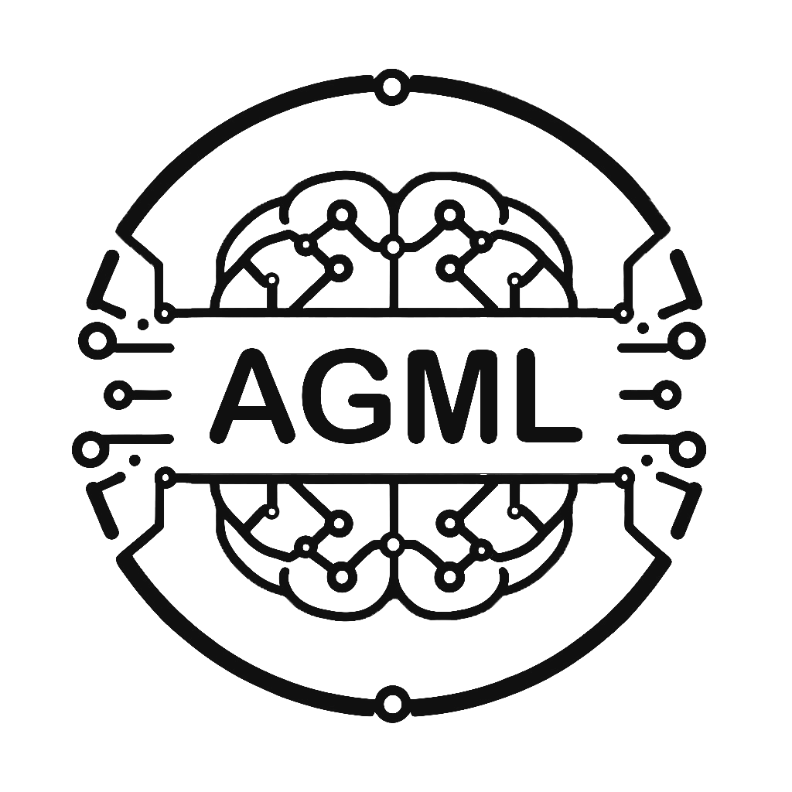

Mehrdad Aksari MahabadiI'm studying computer science at Amirkabir University of Technology. My general interest is applied machine learning, especially for large interconnected systems focusing on complex graphs. I'm also interested in trustworthy and reliable machine learning. |
Jun 2024
I currently work as a research assistant in the machine learning laboratory (MLL) under the supervision of
Dr. Soleymani Baghshah and
Dr. Rohban.
My main focus is on backdoor attacks in deep neural networks.
Jan 2023 Mar 2024
I worked as a software engineer at Snapp. Snapp is the leading company in providing
online taxi services with over 30 million users in Iran. As part of the Routing team, we were responsible
for providing estimated time of arrival (ETA) and navigation services.
Here are some of the things I did:
Here are some of the things I did:
- Added a post-processing procedure to the map matching algorithm, which significantly improved map matcher's overall coverage.
- Integrated historical traffic speeds into the routing engine to enable time-dependent routing, which resulted in a huge boost in ETA accuracy.
- Redesigned and reimplemented ETA benchmarking service leveraging concurrency and message passing in the go programming language, which increased service's throughput by x10.
Jun 2023 Sep 2023

I worked as a research assistant at the algorithms, graphs, and machine learning laboratory (AGML) under the supervision of Dr. Rahmati.
During this time, I studied machine learning with graphs. Our primary focus was on knowledge graph embeddings and their applications within drug interaction networks.
Sep 2020 Jan 2025
BSc at the Amirkabir University of Technology (Tehran Polytechnic) majoring in computer science.
I ranked in the top three students on multiple occasions due to cumulative GPA. So far I have graded 18.71 / 20.
pet projects
JNotes
This repository showcases my implementation of a diverse array of deep learning algorithms in Pytorch. It includes implementation of GAN, VAE, DDPM, LSTM, and GPT architectures, along with applications of CLIP, DINO, and StableDiffusion.
Lunar Lander
is a reinforcement learning agent that learned to land on the moon using DQN.
EvoluCop
Evolucop is an evolutionary agent that masters a simplistic helicopter game. It uses a three layers neural net, to choose wether to push the helicopter.
Evolocop uses evolutionary algorithms to train the network.
Diff-Net
is a tiny neural network framework that works with reverese mode automatic differentiation.
camel
is an interpreted programming language written in Golang. It supports arrays, dictionaries, conditional statements, functions, and closures.
JClash
is a clone of the game Clash Royale in Java.
xv6
is a fork of xv6 operating system that supports copy-on-write and lazy page allocation.
Additionally, it can switch between round-robin and fcfs scheduling algorithms.
coyote
is a dead simple, easy-to-understand routing engine. It parses Open Street Map's data, and creates a graph structure.
After that, Coyote uses graph algorithms to compute the shortest path. Currently, it supports Dijkstra, A*, and ATL (A* with triangle inequality).
visual cryptography
is a cryptographic technique which allows visual image to be encrypted in such a way that the decrypted information is a visual image.
here I implemented one of the best-known schemes is by Adi Shamir & Moni Naor developed in 1994.
misc unsorted
- I have a brother. We are non-identical twins
- In my free time, I go running, hiking, or climbing.
- 0 frameworks were used to make this simple responsive website.